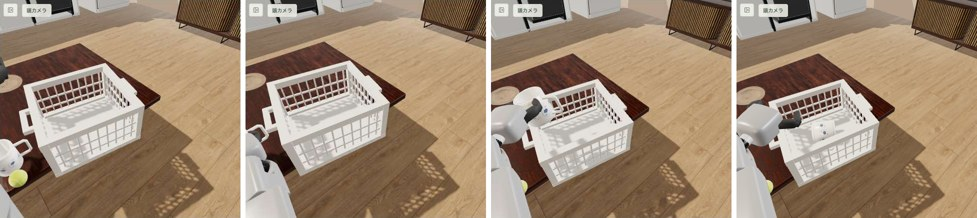
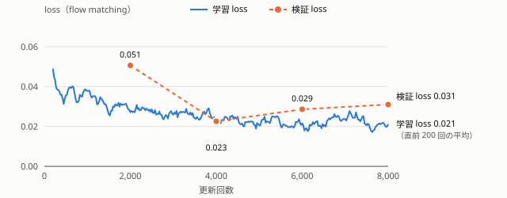
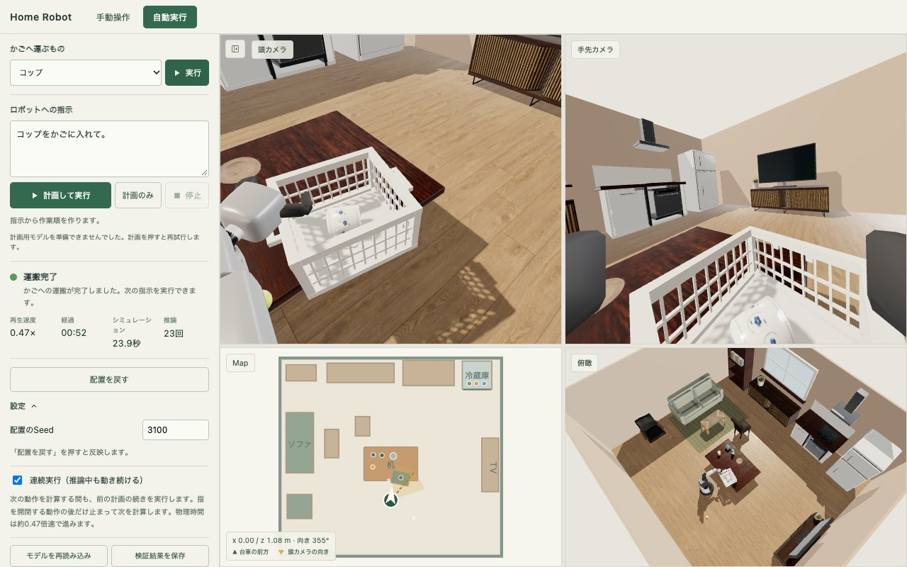

ブラウザだけで動く家庭用ロボットの VLA
日本語で指示すると、ブラウザ内の SLM が作業を計画し、学習済みの VLA が推論中も止まらずに「コップをかごへ」を実行する
概要： 家の中の HSR（トヨタの生活支援ロボット）を MuJoCo で物理シミュレーションし、頭と手先のカメラ画像だけを見て腕を動かす行動モデル（VLA）を、サーバーなしでブラウザの中だけで動かした。VLA は公開されている SmolVLA をもとに、この課題のために教師データを集めて追加学習したものである。日本語で「コップをかごに入れて。」と頼むと、ブラウザ内の SLM（小規模言語モデル、Qwen3-1.7B）が作業を計画し、VLA がコップを掴んでかごに入れる。結果： 最終評価用に取っておいた 60 個の配置（学習にも、どのモデル・設定を使うかの比較にも使っていない）で、推論中も止まらない連続実行で 60/60 成功 （95% 信頼下限 95.1%）。試せる場所： https://home-robot-playground.yurao.workers.dev（「自動実行」メニュー。PC の Chrome、WebGPU 対応 GPU、初回はモデル取得に数分）
1. 目的
1.1 シミュレーション環境が重要になっている理由
ロボットの学習ではデータを集めることと、学んだ動きを評価することに大きな手間がかかる。本物のロボットでは 1 回の試行に人手と時間がかかり、壊れたり危険だったりするので、同じ条件で何百回も繰り返すことが難しい。シミュレーションなら、同じ配置を何度でも作り直し、多数の試行を並行して動かし、安全に失敗させられる。
近年はデータの生成・学習・評価の多くをシミュレーションの中で行い、その結果を実機に持ち込む研究が増えている。
SuperMimic（UC Berkeley、CoRL 2026）は、シミュレーター（MuJoCo Warp）で集めた動きのデータから微分できる世界モデルを学習し、そのモデルの中で人型ロボットの全身制御を学習する。GPU 1 枚・3 時間の学習で、GPU 128 枚で 7 日学習した従来手法の成績を上回った。論文は GPU 時間を 1000 分の 1 以下に減らしたと報告している。学習した制御は実機の Unitree G1 で調整なしに動いた。
MimicGen（CoRL 2023）は、約 200 本の人のデモから、シミュレーションの中で 18 種類の作業について 5 万本以上のデモを自動で作った。
RoboCasa（RSS 2024）は、家庭のキッチンを模した 120 の場面と 100 の作業をシミュレーションで用意した。後継の RoboCasa365（ICLR 2026）は、規模を 365 の作業、2,500 のキッチン、人のデモ 600 時間以上と自動生成のデモ 1,600 時間以上に広げた。
シミュレーションは学習データを増やす場、学習そのものを速くする場、同じ条件で公平に評価する場になりつつある。この課題の最終評価では 60 個の配置を毎回同じ条件で作り直して比べた。これもシミュレーションだからできた。
1.2 このプロジェクトで目指したこと
誰にとっても身近な家庭の環境を使う。机の上のコップをかごに入れるという作業は、説明しなくても何をすればよいか分かる。
自分でロボットを操作して、ロボットの視点から見た作業の難しさを体験できるようにする。頭と手先のカメラの映像だけを見ながら台車・腕・手を動かしてみると、コップを掴むという人には簡単な作業でも、位置合わせや力加減の難しさを実感できる。
こうした体験を、実機のロボットも GPU サーバーも API キーも使わず、ブラウザだけで誰でもすぐ試せるようにする。物理シミュレーション、カメラ映像の描画、VLA、SLM はすべて手元のブラウザで動く。
将来的には、ブラウザでの操作の記録をそのまま学習データにでき、多くの人からデータを集められるかもしれない。今回の学習データは台本の教師で集めた。操作を記録する機能はコードにあるが、公開画面からは外している。
同じ作業が VLA によってどう自動化されるかも体験できるようにする。日本語で指示すると、ブラウザ内の SLM が作業を計画し、VLA がカメラの映像と関節の実測値だけから腕を動かす。VLA は 1 回の推論に約 1 秒かかるが、推論のたびに止まらず、前の推論で決めた動きの続きを実行しながら次の推論をする「連続（非同期）実行」で、ロボットを滑らかに動かす。
2. できること（現状）
機能 内容 手動操作 キーボード・ボタンで HSR の台車・腕・手・頭を動かす。頭カメラ・手先カメラ・地図・俯瞰の4画面。 自動実行（主機能） 日本語の指示を入力し「計画して実行」。SLM が作業の並びを決め（どんな作業でも計画し、各作業に「学習済み」「未学習」を表示）、VLA がカメラ画像と関節の実測値だけから腕を動かす。学習済みの作業はコップ（またはテニスボール）をかごに入れること。段階（接近・把持・運搬・静止確認）と経過時間を表示。 連続実行 推論中も物理を止めずに動き続ける（既定）。物理は実時間の約 0.47 倍で進む。設定で同期実行にも切り替え可能。 ブラウザ内で完結 MuJoCo（WASM）、SmolVLA（ONNX Runtime WebGPU）、Qwen3-1.7B（transformers.js / WebGPU）。モデルは静的ファイルとして配信し、ハッシュで検証してからブラウザ内にキャッシュ。

図1 最終評価（seed 3100）の頭カメラ。左から：開始時、掴みに行く、運ぶ、かごの中に置いた後。VLA はこの画像と手先カメラ画像、6 チャンネルの関節実測値、指示文だけを入力にする。
3. システム構成
部品 中身 物理・センサー MuJoCo WASM（2 ms 刻み）で HSR と家具・コップ・ボール・かごを計算。頭・手先カメラは 320×240 の RGB を描画して VLA に渡す。 VLA（行動モデル） SmolVLA（LeRobot）を HSR 用に追加学習。入力：頭と手先の RGB、指示文、6 チャンネルの実測（腕の上下・肩・腕の回転・手首の曲げと回転・指の開き）、連続実行で確定済みの直前の目標列。出力：100 ms ごとの関節目標 16 個（1.6 秒分）。flow matching を 10 ステップ、対称な雑音 4 組の平均。ONNX に書き出し、重み 1.57 GB を WebGPU で実行（約 0.9 秒/回）。 SLM（計画） Qwen3-1.7B（q4f16、約 1.43 GB）をブラウザ内で実行。①指示から作業の並び（作業名と VLA に渡す指示文）を JSON で出す、②作業ごとに「コップ／ボールをかごへ（学習済み）か、その他か」を短く判定する、③未学習の作業の段階を書く、の 3 つに問い合わせを分ける（1 回にまとめると小さいモデルが作業の種類を取り違えた）。学習済みの作業には学習時の指示文を必ず使う。 学習 シミュレーターの状態を使う台本の教師でデモを集め（その状態は学習モデルの入力には使わない）、GPU で追加学習。 配信 Cloudflare Workers の静的ファイル。
3.1 学習データの集め方
人は操作していない。ブラウザで動くシミュレーターの中で、台本どおりに動く教師にコップを運ばせ、その様子を記録した。ボールのデータは元のデータセットの 50 本をそのまま使った。
配置：seed ごとに、コップ・ボール・かごの位置を水平方向に ±3〜4 mm ずらす。seed は学習用（1000〜1999）、検証用（2000〜2099）、評価用（3000 番台）に分けてある。
教師：シミュレーターから物体の正確な位置を受け取り、「上へ → 合わせる → 閉じる → 持ち上げる → 運ぶ → 下ろす → 放す → 静止」を決まった時間割で実行する。
開始のばらつき：やさしい置き方のコップ 322 本のうち 102 本は、腕の開始姿勢をずらした場面から始める。DART 型の 293 本は最初の 3 秒だけ、実行する目標に低周波のずれ（標準偏差は持ち上げ 0.01 m、関節 0.03 rad）を入れる。
記録：10 Hz で、頭と手先のカメラ画像、関節の実測値 6 チャンネル、教師の目標値 6 チャンネルを保存する。DART 型では、ずれを入れる前の目標を記録する。
合否：シミュレーターで測った力や動きをもとに判定する。運べなかったデモ、2 秒静止しなかったデモ、途中で落としたデモ、意図しない接触の力が 100 N 以上だったデモ、物体の接触力が異常に大きかったデモは使わない。
規模：やさしい置き方は 420 回試して 339 本が合格した（学習用 322 本、検証用 17 本）。DART 型は 400 回試して 296 本が合格し、そのうち 293 本を学習に使った。画面のないブラウザを 6 並列で動かして集めた（やさしい置き方で約 2 時間 50 分）。
4. 工夫した点
4.1 推論中も止まらない連続実行と、確定済みの目標を入力にする学習
同期実行では 1.6 秒ごとに約 1 秒止まり、カクカク動く。そこで、推論中も前の計画のうち実行予定の目標を動かし続ける連続実行にした。すると推論に使う画像は 0.4 秒前のもので、新しい計画の最初の部分はすでに実行が確定している。単純につなぐと計画の切り替わりで動きがずれ、成功率が大きく下がった（公開モデルで 4/30）。
推論時に、確定済みの部分へ計画を寄せる補正（RTC の方式）を試したが、どの強さでも悪化した。
学習時に、確定済みの目標の列（遅れ 0〜8 コマ）を入力として与える「接頭辞条件付け」で再学習した（Training-time RTC の考え方）。連続実行の成功が 4/30 → 16/30 → 23/30 と上がった。
さらに、学習時に確定済みの列へ小さなずれを足して、モデルが自分の過去の予測を鵜呑みにしないようにした。推論の返事がまれに遅れたときは、直前の目標を最大 0.3 秒保って待つ。
計画の切り替わりで目標が跳ぶ量は中央値 0.016 rad で、計画の中の 100 ms ごとの変化（上位 10% で約 0.08 rad）と同程度に収まった。
4.2 失敗の原因ごとに直した教師データ
元の教師は置くときにコップをかごの縁に押し付けてから手を開き、その反動で台車がずれて失敗していた（台車ずれ 2 cm で失敗）。押さずに真上で開く「やさしい置き方」の教師に変え、置く瞬間の台車の回転を中央値 17.6 → 5.2 mrad に減らした。
連続実行では、掴む位置が少しずれてコップが滑る失敗が残った。教師の動作に低周波のずれを入れながら、ラベルはずれを入れる前の正しい目標にする DART 型のデータ（293 本）を足し、ずれから立て直す動きを学ばせた。掴みの失敗がほぼなくなった。
うまくいかなかった試みも記録した。学習量を 4 倍にする（連続実行で 8/30 まで崩れた）、画像側も学習する（4/10）、置き方の別の教師、最後の 2 つのチェックポイントの重みの平均（同じ水準）、推論の段数を半分にする高速化（成功率が下がった）などである。
4.3 ブラウザで重いモデルを動かす工夫
ONNX に書き出したグラフを、4 組の雑音で共有できる前半と、組ごとの後半に分け、1 回の推論にかかる時間を CPU・WebGPU とも約 6 割短くした（同じ入力で出力はビット単位で一致）。
ページを開くたびに、固定した入力でブラウザの出力と学習環境の出力が一致するか（3/3）を確かめてから実行する。
モデルは 20 MB 以下のパーツに分けて配信し、全パーツをハッシュで照合してからキャッシュする。2 回目以降はダウンロード不要。
5. 結果
課題：コップを机からかごに入れる。学習モデルだけで動かし、ルールによる補助はなし。
5.1 最終モデルの学習
公開中の HSR 用モデル（SmolVLA を HSR のデモで追加学習したもの）から始め、次の設定で追加学習した。
項目 設定 学習データ デモ 665 本・167,825 フレーム（10 Hz、約 4.7 時間分）。内訳は、押さずに置く教師のコップ 322 本、ずれから立て直す DART 型のコップ 293 本、ボール 50 本。 検証データ 学習に使わない別のデモ 27 本・7,353 フレーム。 学習する部分 行動を出す部分（action expert と、状態・行動・時刻の入出力層）だけ。画像と言語のモデル（SmolVLM2）は固定。 最適化 AdamW（β1 0.9・β2 0.95、weight decay 10-10 ）、学習率 2×10-5 で一定、勾配ノルムの上限 10、bf16。 バッチと更新回数 1 サンプル×勾配の蓄積 4 回（実質バッチ 4）で 8,000 回更新。使ったサンプルは 32,000 個で、学習データのフレーム数の約 0.19 倍。GPU 1 枚で約 2 時間。 サンプルの選び方 各デモの最初の 20 フレームを 8 倍の重みで選ぶ（動き出しを多めに学ぶ）。 確定済みの目標の入力 出力 16 個のうち先頭の 0〜8 個（0〜0.8 秒分）をランダムに確定済みとして入力に与え、その部分は loss から除く。確定済みの目標には、サンプルと関節ごとに標準偏差 0.03（正規化した単位）のずれを足す。 loss flow matching（雑音から目標の列へ向かう速度の二乗誤差）。
5.2 loss の推移

図2 最終モデルの学習 loss（直前 200 回の更新の平均）と検証 loss（2,000 回ごと）。
学習 loss は、最初の 200 回の平均 0.049 から最後の 200 回の平均 0.021 まで下がった。検証 loss は 4,000 回の 0.023 が最小で、8,000 回では 0.031 だった。検証 loss は検証データの 16 サンプルで、雑音と時刻もランダムに選ぶため、ばらつきが大きい。チェックポイントは loss で選ばず、最後（8,000 回）をそのまま使った。
確定済みの目標を入力にした効果は、検証データで、確定済みの部分より後ろの予測の誤差（正規化した単位の平均絶対誤差）を比べて確かめた。確定済みの目標を入力にできない公開モデルは、確定済みの数が多いほど（より先の目標ほど）誤差が大きい。最終モデルは逆に、確定済みの数が多いほど誤差が小さくなった。
確定済みの目標の数 0 3 5 7 公開モデル（出発点） 0.055 0.099 0.118 0.132 最終モデル 0.040 0.035 0.033 0.030
ただし、この誤差が小さいほど実際に成功するわけではなかった。一つ前の段階のデータで学習量だけを 4 倍（16,000 回×バッチ 8）にしたモデルは、誤差が 0.033〜0.022 と最終モデルより小さかったが、連続実行の成功は開発用の 30 配置で 8/30 に下がった（学習量を変えないモデルは 27/30）。モデルの良し悪しは、loss ではなく実際に動かして決めた。
5.3 成功率
最終評価用の 60 配置（モデルや設定の比較には使っていない配置）で、最終モデルだけを動かした結果。連続実行の 95% 信頼下限（片側 Clopper–Pearson）は 95.1%。
実行方式 成功（壁の内側） 縁の開口の内側 意図しない接触の力 連続（推論中も動く） 60/60 54/60 全回 100 N 以下（中央値 55.7 N） 同期 60/60 47/60 記録していない
「壁の内側」は、コップがかごの側面の格子の内側で 2 秒静止すれば、倒れていても成功とする判定である。「縁の開口の内側」は、コップの外形がかごの縁の開口に収まって 2 秒静止すれば成功とする、より厳しい判定である。
推論は中央値 0.90 秒、物理は約 0.47 倍速。出発点の公開モデルは、連続実行では開発用の 30 配置のうち 4 つしか成功しなかった（4.1）。詳細はリポジトリの docs/rtc-continuous-execution.md と docs/evidence/。

図3 自動実行の画面（最終評価 seed 3100 の終了時）。左が指示と計画・状態、右が頭カメラ・手先カメラ・地図・俯瞰。
6. 限界と今後
配置はほぼ固定で、評価の配置の違いはコップ・ボール・かごの位置が数 mm ずれる程度である。大きく動かした配置で動くかは未確認で、学習データも同じ範囲しかない。
汎化させるには、位置を数 mm ずらすだけでは足りず、データの多様性を増やす必要があったと考える。今回の学習データでは、コップもかごも部屋も同じである。配置を大きく変えたデータや、形や色の違う物体、別の部屋のデータで再学習すれば、もっと汎化できたと考える。
教師は決まった時間割で動くので、動き方の幅が狭い。人の操作を集められれば、動き方の多様性も増やせて、もっと汎化できたと考える。この環境はブラウザで動くので、多くの人から操作を集めやすい。
学習した作業は「かごに入れる」だけである。計画はどんな作業でも出し、未学習の作業（例：かごから出す、冷蔵庫を開ける）も VLA に試させるが、成功の基準がないため 120 秒で失敗になる。「かごから出す」では、VLA は手をかごの上で止めたままだった。
ボールは最終モデルで評価していない。評価はコップのみ。
物理は実時間の約 0.47 倍の速さで進む。実時間にするには推論の高速化（段数を減らした再学習や蒸留）が要る。
シミュレーションのみで、実機での検証はしていない。成功率の数値はこの Mac の GPU での測定で、推論の速さが違うと連続実行の条件が変わる。
7. 公開物
動作するサイト：https://home-robot-playground.yurao.workers.dev
動画：https://youtu.be/OWMNRIN2UOc
コード：https://github.com/RE-yura/home-robot-playground
参考文献
Q. Liao ほか, "SuperMimic: Scaling Humanoid Whole-Body Control with One Differentiable World Model," CoRL 2026. arXiv:2610.28480, https://supermimic.github.io
A. Mandlekar ほか, "MimicGen: A Data Generation System for Scalable Robot Learning using Human Demonstrations," CoRL 2023. arXiv:2310.17596
S. Nasiriany ほか, "RoboCasa: Large-Scale Simulation of Everyday Tasks for Generalist Robots," RSS 2024. arXiv:2406.02523
"RoboCasa365: A Large-Scale Simulation Framework for Training and Benchmarking Generalist Robots," ICLR 2026. arXiv:2603.04356
使用したモデル・データのライセンスはリポジトリの public/models/ATTRIBUTION.md に記載。